煮故事 we're living here
O8D ACT
html5 templates
自行車的記憶之路
陳瑞隆的競速到慢走哲學
陳瑞隆，現年68歲，是社區裡的原生住民，曾是我國1984年洛杉磯、1988年漢城奧運的自行車執行教練，身體現今仍硬朗、心情也開朗，常會在李美容共食團中，打趣說笑話，把大夥逗得開心的成員。
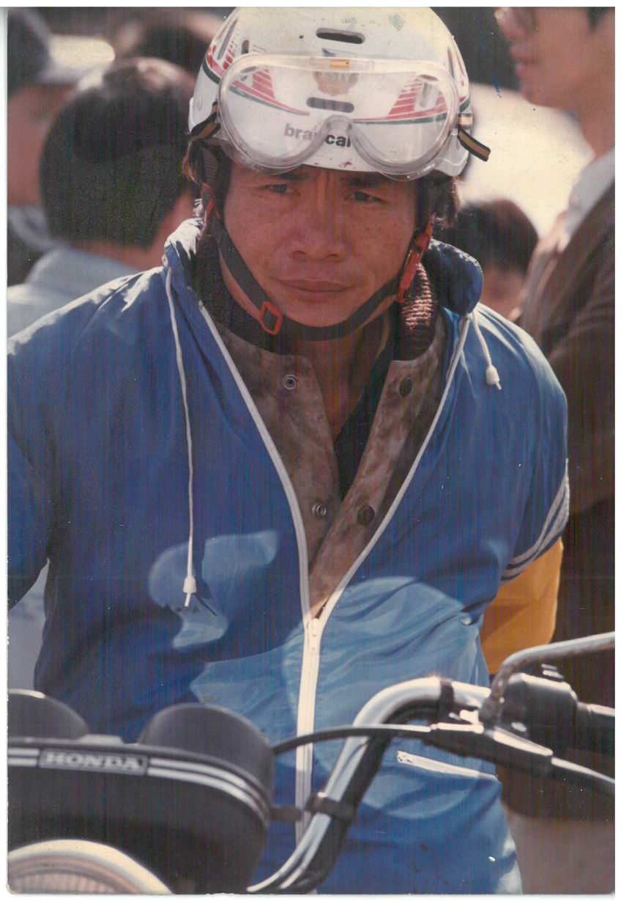
年輕時的陳瑞隆，既帥氣又憂鬱的神情。
把通學工具騎出變興趣
再從興趣練就專業
「我是晚起的蟲……」陳瑞隆說出自己的作息，與自行車的緣份，竟是源於此，他說自己並不愛也不擅長念書，沒考上市區的高中，而是錄取遠在15公里外的新化高中，「每天一大早的車，6點50分，常常坐不到，再等下一班車就會遲到，所以乾脆騎車去上學，趕8點的第一堂課。」
每天騎著通學，也就萌生興趣，於是高中開始跟著訓練，但沒有教練的指導，全是土法煉鋼，謀事端看個人。「學校裡沒有校隊，就跟著社會隊，但嚴格說，並不是車隊的組織。當時我想去參加省運（指台灣省運動會），還是靠自己報名，參加台南市代表的選拔……訓練沒有章法，只知道每天認真騎，騎很遠。」最後如願獲得台南市代表資格，參加省運，得到全國第一，保送文化大學。
運動員不單單只是生理的訓練，同時是心智的養成過程，從興趣萌生到專業，看似短短的高中時間，但騎來全是體悟。「人要去適應環境阿！」陳瑞隆如是說，他沒有去怨懟自立自強的時代，反而體現吃苦當吃補的精神。
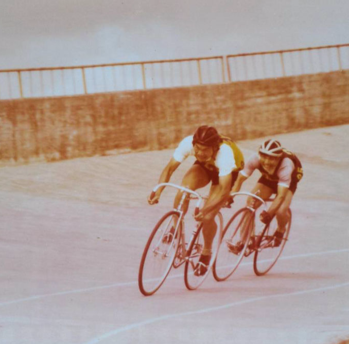
領先者是正在馳騁賽場的
陳瑞隆。
只管投入單車世界
不管被誤會成不良少年
陳瑞隆談起自己高中的第一台自行車，「那是常被誤解成不良少年的彎把自行車，整台又是金黃色的。透過朋友跟當時仍駐紮台灣的美軍購入，這種車大家都沒看過，我也不知道行情。那時候有『美軍俱樂部』，台南就有台灣人在賣裡頭流出來的生活用品，物件非常廣泛。」這台自行車陪伴他當上選手，才又購入另外一台。也看見當時美軍所擁有的生活物件，則是對台灣人來說，是個流行先進的代表。
而到了大學階段，並沒有因為此時代發展，增添採購的便利和多元的選擇，其因是「台灣腳踏車工業根本還不行！」他說台灣人對車子的知識太過貧乏，需仰賴進口，也只知道進口便是好，不過如果進口一整台有進口稅，整台車就會變得非常貴，只能透過親朋好友出國帶回來。「但他們對零件、型號又不熟悉，買錯是常有的事。或是零件壞了，根本沒得找，只能自己改，那時騎車，其實也是兼當維修師傅了。當時蠻可憐的，或是只能買舊車，一騎就是十幾年。」
時局變化太大
與年齡競速的運動生命
民國60年，台灣退出聯合國，這樣的政治局勢，也反映在陳瑞隆在大學選手時期，出國比賽，已是難事，選上國手沒能出國，或是去到一半突然折返都是會有的事，「沒有出去落地都不算數……」陳瑞隆說出因政局而牽動全台運動選手的比賽機會。沒能以選手的身份參加奧運，在民國70年代間，就兩次以執行教練的角色，代表國家參加兩次的奧運，亞洲的國際盃賽，同樣有著他的教練身影，也透過這樣的出國機會，觀摩國際選手的訓練方式，同時在國外走走。
當年除了受政局的影響，台灣運動員也必須要跟運動生命競速，陳瑞隆說：「自行車選手，將近30歲都已經是算老了，要速度、耐力，已經不比年輕。棒球30歲就不太能用了，籃球則是淘汰，變化太大了。」精華時光太過有限，因此大學畢業、從軍退伍後，便轉當教職、教練了。
(圖1) 以教練身份帶領選手征戰亞洲各地。
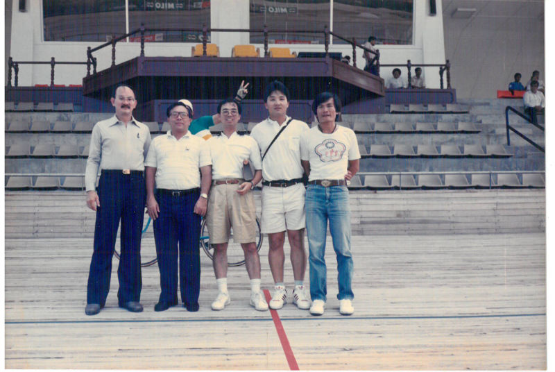
(圖2) 以教練身份帶領選手征戰亞洲各地。
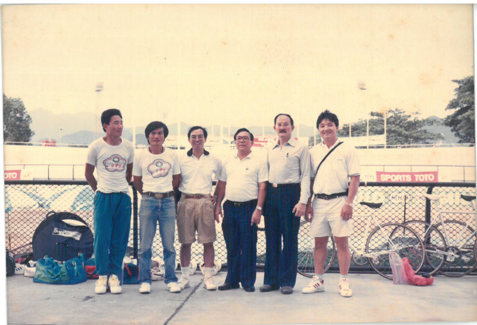
(圖3) 以教練身份帶領選手征戰亞洲各地。
(圖4) 以教練身份帶領選手征戰亞洲各地。
(圖6) 時任的李登輝總統在國訓中心慰勞選手和教練團。
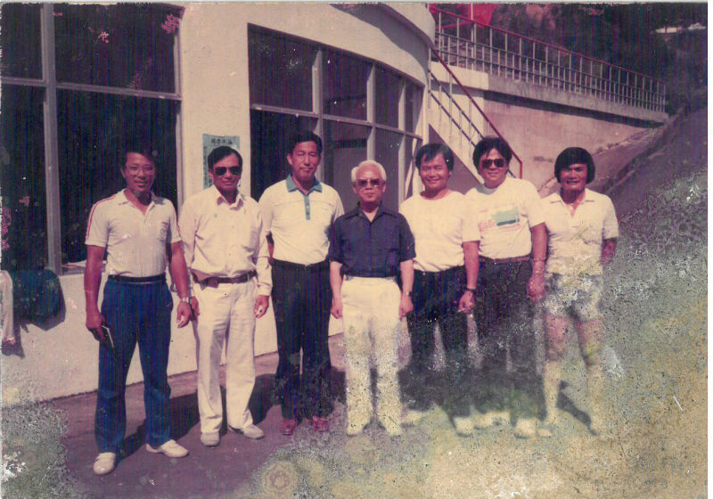
(圖7) 以教練身份帶領選手征戰亞洲各地。
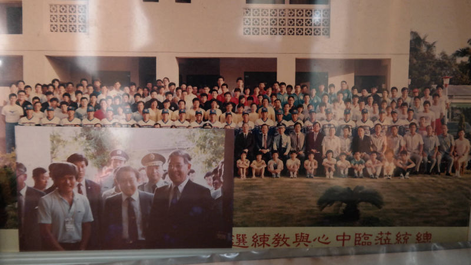
(圖5) 在左營國訓中心時期，利用閒暇使用從事壘球的運動。
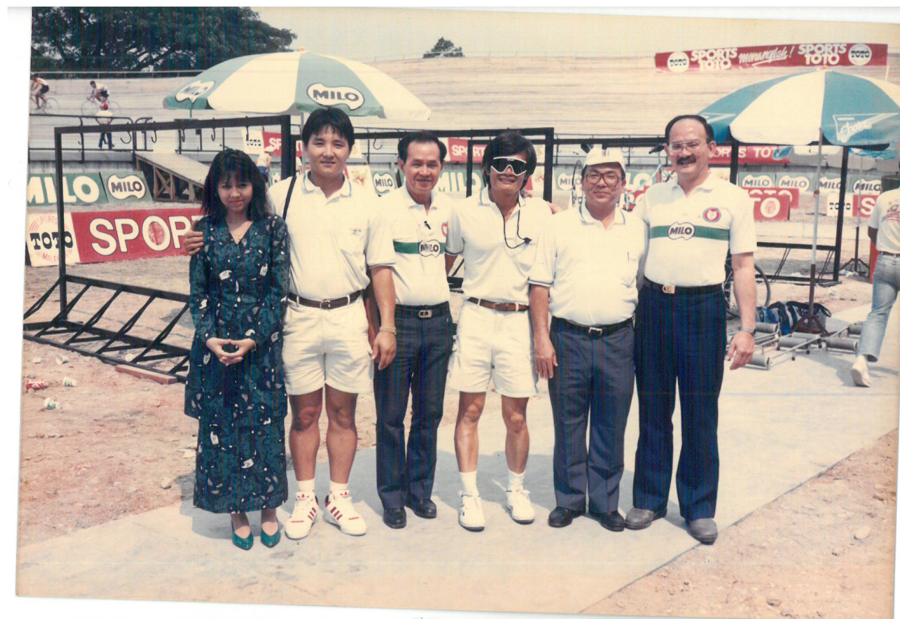
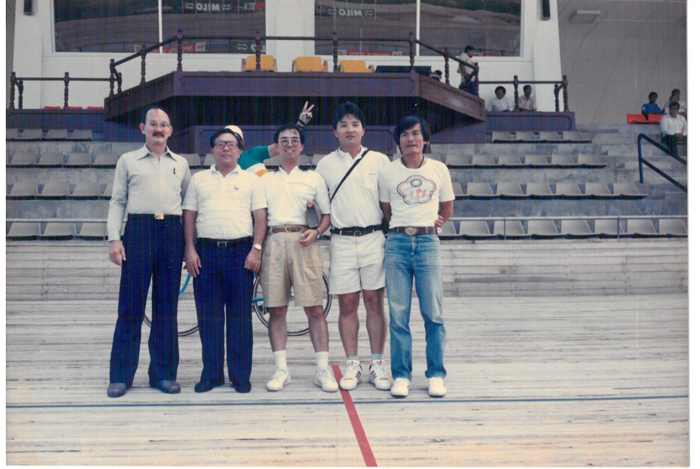
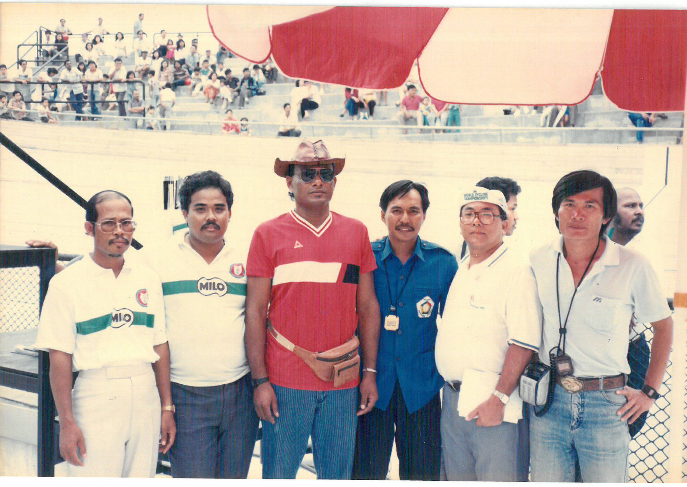
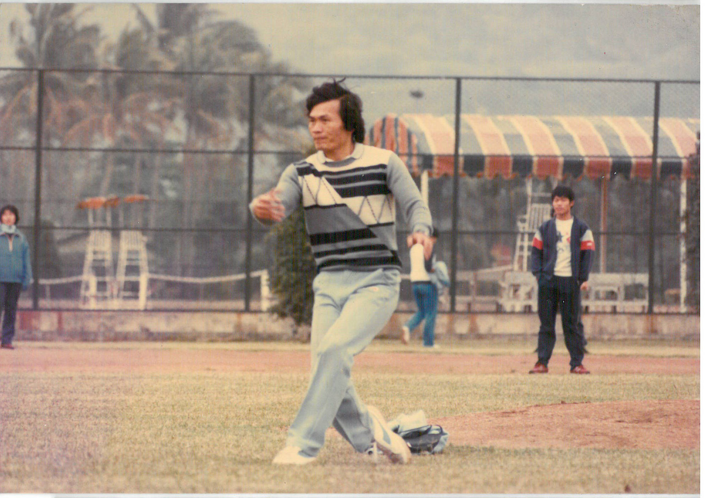
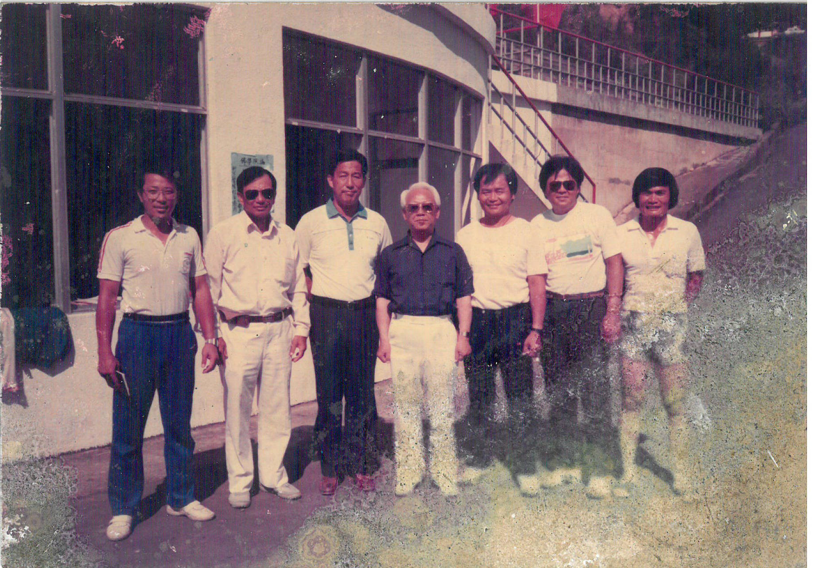
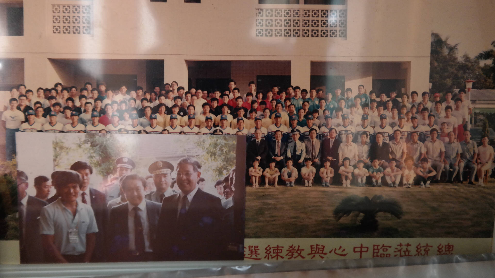
Previous
Next
Close
因比賽了解自己
只不過人生不再是拼輸贏
問起他選手時，是哪一型的選手，他說高中時，並不知道自己是屬於耐力型、速度型，都曾參加過100公里、200公尺的比賽項目，是後來才知道自己的肌肉組織跑短程相對有利，「速度是天生的，所有的運動都是在比拼速度！」陳瑞隆指出一個選手的基本身體素質，就是可以從速度看出來，且補充說明：「跑長跑也是，選手們撐到近百公尺，代表體力都差不多，最後是在爭一口氣，比的是速度衝刺。」
而現在的陳瑞隆已不再競速，除了騎車兜風外，每天也在運河畔走上6公里至10公里，用另外一種的緩步，體會人生、觀察社會。載著他駛上民生路，又一一說出哪裡從前的樣子，「台南在都市的發展，似乎也不快。」也許這城市的快慢感官，是來自於當下他的心境，陳瑞隆步伐慢了下來，看著台南一些歷史記憶，時間彷彿都還停留在他的腦海裡，沒有輸贏。
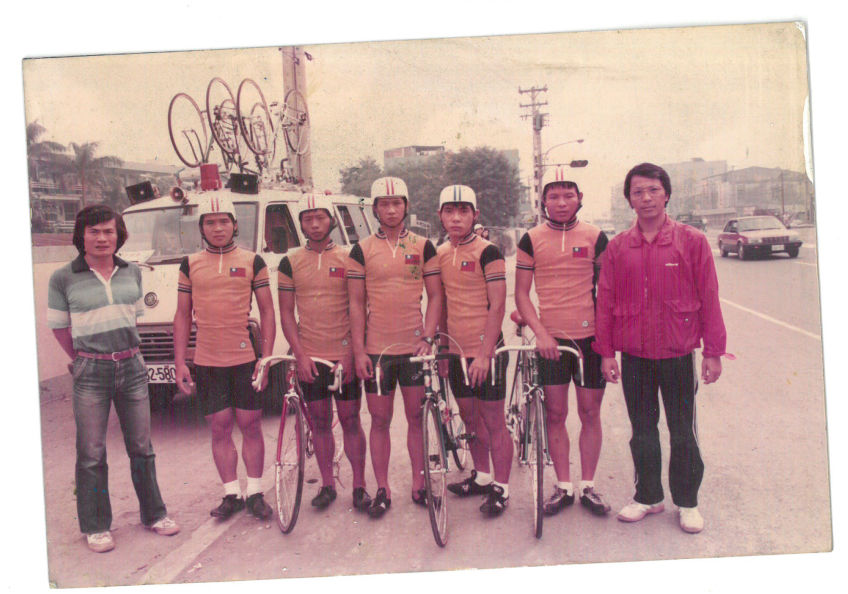
圖左一為陳瑞隆，帶過的子弟兵相當多，練就一雙慧眼。
< 上一篇：益春藥房
下一篇：採集中